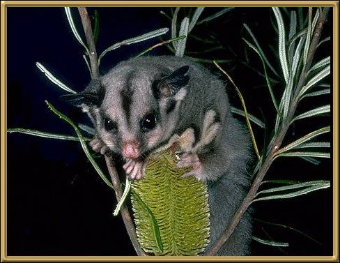
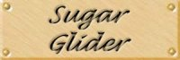

These seem to have become quite popular as pets outside Australia. It weighs less than 150grams (5 ounces) and feeds on the gum and sap of Eucalypts and Acacias, as well as a wide range of arboreal insects. You will often find a group of adults and their young sharing a nest. They are considered to be secure.
Photographer: Unknown